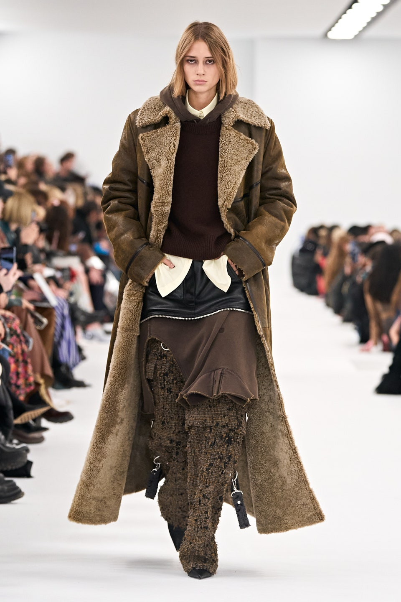
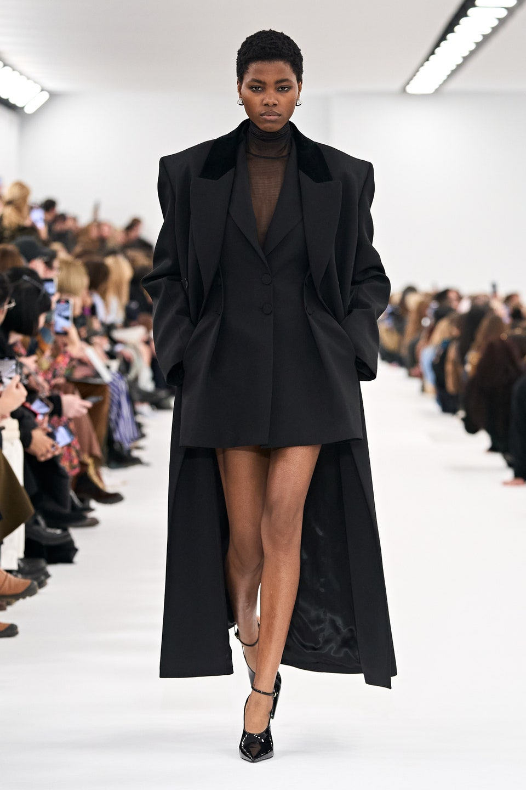
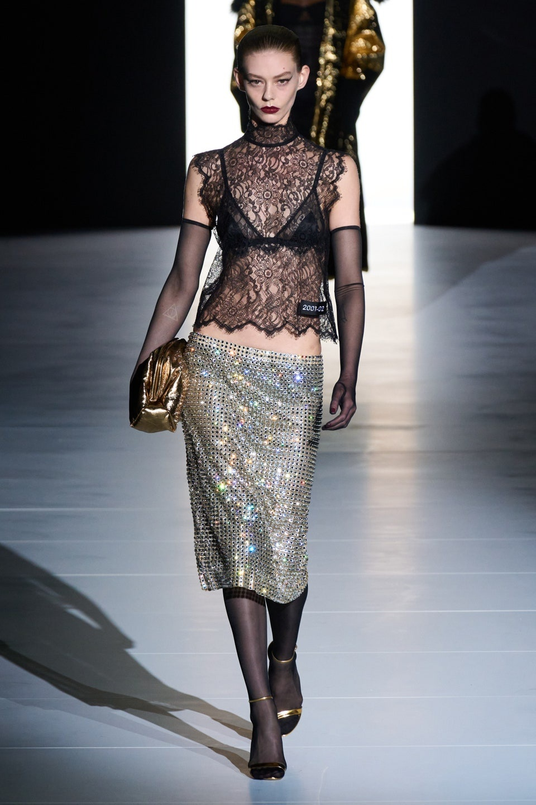
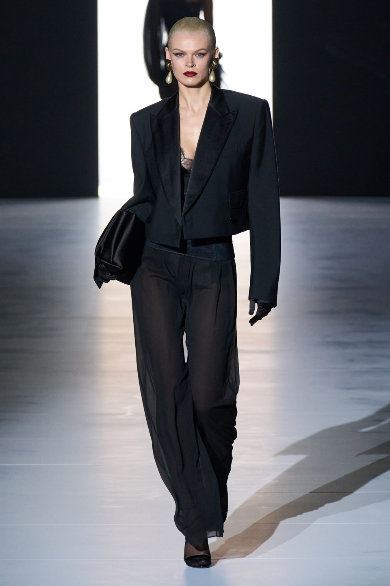
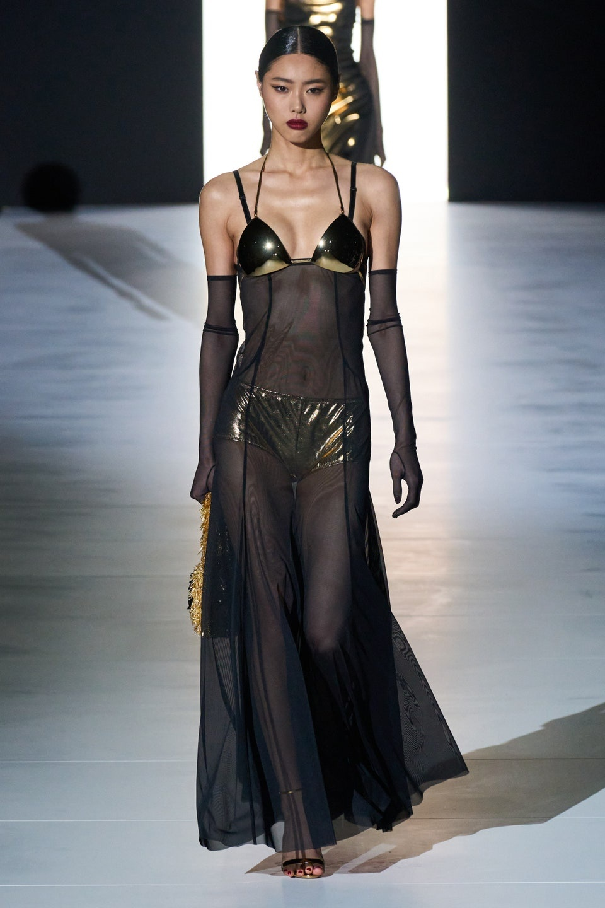

지방시의 크리에이티브 디렉터 매튜 윌리암스가 ‘우아함’이라는 단어를 꺼냈다. 카니예 웨스트, 레이디 가가와 협업하며 스트리트 패션 트렌드를 이끌었던 그가 자주 언급하는 종류의 단어는 아니다. 지방시는 이번 시즌 오랜 하우스의 역사를 돌아보고 우아함에 집중한다고 선언했다.
새하얀 런웨이 위에 맥시한 블랙 코트가 오프닝을 열었다. 컬렉션을 포문을 연 다섯 벌의 룩은 쿠튀르 공방에서 제작한 것으로 이번 컬렉션이 얼마 전에 선보인 남성복 컬렉션과 같은 플로로 전개될 것임을 예고했다. 쿠튀르에서 제작한 블랙 코트와 재킷은 심플하지만 강한 아우라는 지니고 있었고 오버사이즈 코트와 재킷의 허리 부분을 버튼다운 방식으로 짚어 우아한 주름과 실루엣을 만들어낸 점이 특히 시선을 끌었다. 쿠튀르 시리즈가 끝난 뒤에도 미니멀한 디자인의 블랙 재킷과 코트가 이어 등장했는데 절제된 디자인 속에서도 소매는 손을 다 덮을 정도로 길게 디자인하여 매튜 윌리암스의 디자인 베이스, 즉 스트리트적인 뉘앙스를 더했다. 원피스와 스커트에는 오간자 소재의 트레일 장식을 달아 매니시한 아우터 및 재킷과는 상반된 매력을 드러냈다(모델이 워킹할 때 무척이나 아름답고 가볍게 휘날렸다). 2023 FW 시즌 트렌드인 가죽 소재는 지방시 컬렉션에서도 중요한 키워드였다. 블랙 레더 트렌치코트, 롱스커트 등이 무척이나 매력적인 모습이었다.
미니멀한 컬렉션을 마친 뒤 새로운 2막을 열듯 스트리트 스타일이 등장했다. 디스트레스트 디테일의 유틀리티 팬츠, 바시티 재킷, 팬츠 위에 스커트를 레이어링하는 킬트 스타일이 지퍼, 메탈, 스트링, 주머니 등의 디테일과 더불어 펑키한 분위기를 냈다. 하지만 지난 남성복 컬렉션과 비교하면 이와 같은 스트리트 스타일은 많이 절제된 모습이었고, 매튜 윌리암스는 이브닝 드레스로 컬렉션을 마무리하며 이번 시즌은 하우스의 우아함에 집중하겠다는 의지를 다시 한번 드러냈다. 드레스 위에 놓인 물고기와 플라워 프린트는 창립자인 위베르 드 지방시의 스케치를 아카이브에서 그대로 가져온 것이다.
Givenchy 2023 F/W Collection
우아함이 강조되는 오간자 소재의 원피스와 맥시한 스트리트 스타일이 돋보이는 재킷과 코트


돌체 앤 가바나는 브랜드 본연의 과감함, 우아함으로 돌아갔다. 브래지어와 코르셋 등 섹시한 란제리 요소를 아우터로 꺼내놓으면서 1980년대 후반과 90년대 초반의 그들 자신이 보여줬던 섹시한 스타일을 재현했다. 도미니코 돌체와 스테파노 가바나 듀오 디자이너에게에 영감을 준 것은 지난 시즌 돌체 앤 가바나 컬렉션 큐레이팅을 맡아 협업했던 킴 카다시안. “킴과 함께 일하면서 우리의 과거, 추억, 유산을 돌아보는데 도움이 되었습니다. 과장된 소셜 미디어의 세계에서 벗어나 우리의 진짜 모습으로 돌아가고 싶었습니다.” 돌체 앤 가바나의 설명이다.
킴 카다시안이 프런트로의 가장 중심이 되는 자리에 앉아 여전히 끈끈한 유대를 뽐내는 가운데 돌체 앤 가바나 고유의 란제리 드레싱과 고혹적인 아워 글라스 실루엣이 선보였다. 상황은 이들에게 호의적이다. Y2K 스타일이 여전히 유행하고 있으며 80년대 말에서 90년대 초 돌체 앤 가바나 빈티지 제품들은 매우 높은 가치가 매겨지고 있는 중이니! 컬렉션은 이보다 더 명료할 수 없었다. 좋은 소재와 좋은 재단, 무슨 설명이 더 필요할까? 레이스 브래지어, 캐미솔 드레스, 코트, 슈트 등은 아주 몸에 꼭 맞거나 혹은 오버사이즈로 선보였다. 컬러는 블랙, 레드, 화이트, 골드 컬러로 단순하게 정리했다. 울, 실크, 면, 튤 등 정제된 소재로 이탈리아 최고의 테일러링을 통해 컬렉션을 완성했다. 이는 도미니코 돌체가 시칠리아의 테일러 집안에서 태어났고 아주 어린 시절부터 재단사였다는 사실을 새삼 떠오르게 했다. 주얼리와 깃털 장식이 고혹적 느낌을 더하는 한편 남성용 턱시도처럼 상반된 요소를 적소에 배치하여 섹시함은 업그레이드됐다.
섹시한 이탈리아 미망인 스타일을 이처럼 잘 표현할 수 있는 것은 오직 돌체 앤 가바나뿐이다.
DOLCE & GABBANA 2023 F/W Collection
블랙,레드,화이트,골드로 단순하게 정리된 섹시한 스타일의 란제리와 슈트



발렌티노 2023 FW 컬렉션의 베뉴는 파리 살로몬 로스차일드 호텔(Hotel Salomon Rothschild). 오래된 부티크를 떠오르게 하는 클래식한 공간에 매시브 어택(Massive Attack)의 로버트 델 나자(Robert Del Naja)가 작곡한 사운드트랙이 울려 퍼졌다.
크리에이티브 디렉터 피엘파올로 피촐리가 선택한 2023 FW 테마는 ‘블랙 타이(Black Tie)’. 그는 15세의 딸이 친구들과 밤에 놀러 나갈 때 자신의 옷장을 급습하여 검은색 정장과 셔츠, 넥타이를 꺼내 입고 나간 것을 보고 매우 놀랐다며 ‘딸은 내가 정장을 입고 사무실에 가는 것을 본 적도 거의 없다. 그녀는 그냥 셔츠와 슈트 같은 옷을 좋아했을 뿐이고 이런 방식은 보통의 개인이 자유롭게 패션에 접근하는 방식이라고 생각했다’라고 이번 컬렉션의 배경을 설명했다.
발렌티노는 남성 권위의 상징이었던 셔츠와 슈트를 해체와 재구성의 과정을 통해 새로운 옷으로 조명했다. 이를테면 검은색 넥타이가 목으로부터 몸까지 부채꼴로 펼쳐져 섹시한 리틀블랙드레스가 되고, 화이트 셔츠와 넥타이에 마이크로 쇼츠를 매치하여 화려한 밤의 클럽 스타일로 재해석했다. 엄숙한 슈트에 시스루 도트 블라우스와 컴뱃 부츠를 믹스 매치하기도 했다.
피엘파올로 피촐리는 슈트의 새로운 쓰임을 위해 검은 재킷을 후드티처럼 가볍게 디자인했다고 밝혔다. 프릴, 깃털, 스팽글, 장미 아플리케, 보타이 등 발렌티노 특유의 화려한 디테일을 더했는데, 덕분에 <르 클럽 쿠튀르(Le Club Couture)>를 주제로 지난 1월에 선보인 쿠튀르 컬렉션과 비슷한 분위기를 이어갔다.
거리의 시민들이 컬렉션을 볼 수 있도록 패션위크뿐 아니라 오트 쿠튀르의 문을 활짝 열어 대중과 소통해온 피엘파올로 피촐리다운 컬렉션이었다.